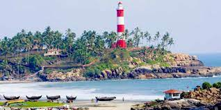

The capital city of Kerala, Thiruvananthapuram or Trivandrum, is an appealing blend of a strongly rooted heritage and a nostalgic colonial legacy. Built upon seven hills, this city has long since left the days when it was only used by seafaring explorers behind - today, Trivandrum is an expensive metropolis with quaint urban charm and plenty of architectural and historical places to visit. In addition, Trivandrum is a gateway to nearby popular beach towns of Kovalam and Varkala.
The Padmanabhaswamy temple (also known as Anantha Padmanabhaswamy temple) is a must-visit temple of India. Other famous temples in Trivandrum include the Attukal Bhagawati temple, the Aazhimala Siva Temple, the Karikkakom Chamundi Devi Temple, and the Pazhavangadi Ganapathy Temple.
The city is home to a few museums, such as the Kuthiramalika Palace Museum and the Napier Museum. The Kuthiramalika Palace Museum is situated close-by to the Padmanabhaswamy temple. Renowned for its Travancore styled architectural features and its structural elegance, this museum houses priceless paintings, traditional furniture, and other royal family collections.
Major Tourist Spots:
Kovalam Beach
Kovalam is an internationally renowned beach with three adjacent crescent beaches. It has been a favourite haunt of tourists since the 1930s. A massive rocky promontory on the beach has created a beautiful bay of calm waters ideal for sea bathing.
The leisure options at this beach are plenty and diverse. Sunbathing, swimming, herbal body toning massages, special cultural programmes and catamaran cruising are some of them. The tropical sun acts so fast that one can see the faint blush of coppery tan on the skin in a matter of minutes. Life on the beach begins late in the day and carries on well into the night. The beach complex includes a string of budget cottages, Ayurvedic health resorts, convention facilities, shopping zones, swimming pools, Yoga and Ayurvedic massage centres.
Sree Padmanabhaswamy Temple
The Padmanabhaswamy temple, dedicated to Lord Vishnu situated in Thiruvananthapuram, the capital of Kerala, is considered to be world’s richest temple, due to donations that it has been receiving over the ages. But there is more to this temple than its sheer wealth. Its architecture has a unique blend of both Kerala and Dravidian styles of neighbouring states.
Thiruvananthapuram Zoo
The Padmanabhaswamy temple, dedicated to Lord Vishnu situated in Thiruvananthapuram, the capital of Kerala, is considered to be world’s richest temple, due to donations that it has been receiving over the ages. But there is more to this temple than its sheer wealth. Its architecture has a unique blend of both Kerala and Dravidian styles of neighbouring states.
Priyadarshini Planetarium
Kovalam is an internationally renowned beach with three adjacent crescent beaches. It has been a favourite haunt of tourists since the 1930s. A massive rocky promontory on the beach has created a beautiful bay of calm waters ideal for sea bathing.
The leisure options at this beach are plenty and diverse. Sunbathing, swimming, herbal body toning massages, special cultural programmes and catamaran cruising are some of them. The tropical sun acts so fast that one can see the faint blush of coppery tan on the skin in a matter of minutes. Life on the beach begins late in the day and carries on well into the night. The beach complex includes a string of budget cottages, Ayurvedic health resorts, convention facilities, shopping zones, swimming pools, Yoga and Ayurvedic massage centres.
Vizhinjam Lighthouse

Lighthouse Beach is a hot favourite in the Kovalam area. You can climb to the top of the lighthouse through a spiral staircase until you reach the very summit. Here, all your exhaustion melts away as the first breeze gently cradles your face. Couples flock here to take photographs that adorn family albums for a lifetime. It is among the best vantage points to view the coast line in Southern Kerala.
Magic Planet Theme Park
The Magic Planet located in Thiruvananthapuram which claims to be the world’s first magic themed park is fast emerging as a major tourist spot in Kerala. Envisaged to showcase the wonders of magic and explore its endless possibilities, the doors to this castle of magic have been thrown open to the public.
A multitude of fascinating activities await visitors here. Among the many segments, the ‘Street Magic Venue’ which displays spellbinding performances and tricks such as ‘The Indian Mango Mystery’ and the ‘Indian Basket Trick’ on the streets attract visitors in hordes. Be it the magical session displaying William Shakespeare’s ‘The Tempest’, or the ‘Magic Gallery’ at the History Museum with its rare memorabilia tracing the tale of magic and magicians from the middle ages to the 1950s, or the ‘Circus Castle’ where hypnotic and mesmerising acts are staged, the Magic Planet will enthrall you beyond words.